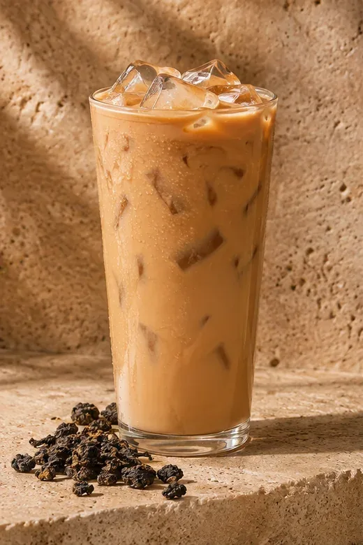

Can I order online?
This site helps you choose your drink. Tell staff your selection in person.
Chengdu, China
This fictional shop illustrates how an in-store pickup could work.

This site helps you choose your drink. Tell staff your selection in person.
Yes. Tell staff your preference when placing the order.
See the menu ingredient notes and ask staff about cross-contact.